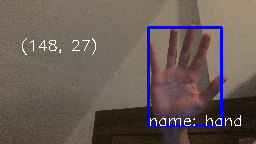
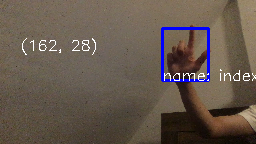
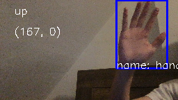
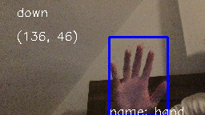

1.1 Our program recognizes 5 gestures: open hand, index finger, fist, scrolling up, and scrolling down.
1.2 We preprocess the templates by first converting them to black and white images. We scale the image by 0.2, and then use dynamic background substraction to make static objects black and dynamic objects white. For gesture static recognization, we use template matching for each one, and set a threshold for every template. We find the one with the most probability and draw that one on the canvas. For scrolling motions, we compare 15 consecutive frames, and check if the recognized gesture is moving up or down. For those frames, as there might be 1 or 2 frames inside it was missed, we preprocess that so the minor misses will be ignored. After recognition, we draw boxes of the objects, and label the coordinates. If there are motions, we label the detected motions.
2.1| Actual class | |||||
|---|---|---|---|---|---|
| Open hand | Index figure | Fist | No gesture | ||
| Predicted class | Open hand | 5 | 0 | 0 | 0 |
| Index finger | 0 | 4 | 0 | 0 | |
| Fist | 0 | 1 | 5 | 0 | |
| No gesture | 0 | 0 | 0 | 5 |
| Actual class | ||||
|---|---|---|---|---|
| Scrolling up | Scrolling down | No gesture | ||
| Predicted class | Scrolling up | 5 | 0 | 0 |
| Scrolling down | 0 | 4 | 0 | |
| No gesture | 0 | 1 | 5 |
Left: good open hand. Right: hand too big

Left: good index finger. Right: wrong orientation

Left: good fist. Right: fist blocked by phone


Left: good scrolling up. Right: moving too slow

Left: good scrolling down. Right: waving too hard that it is not considering scrolling down
